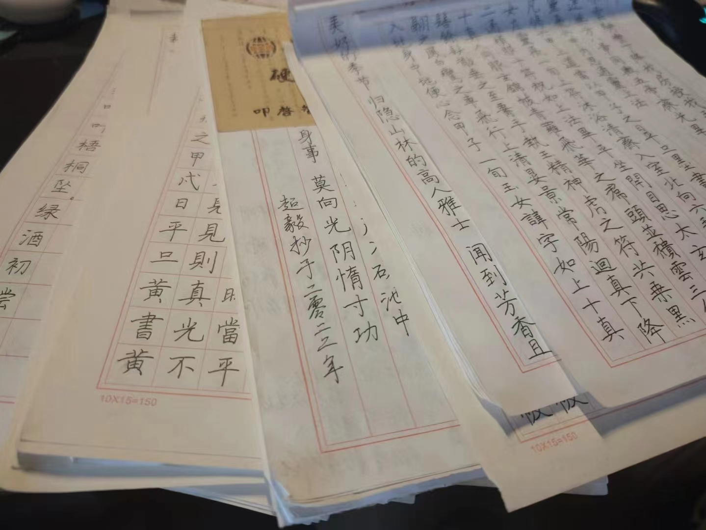
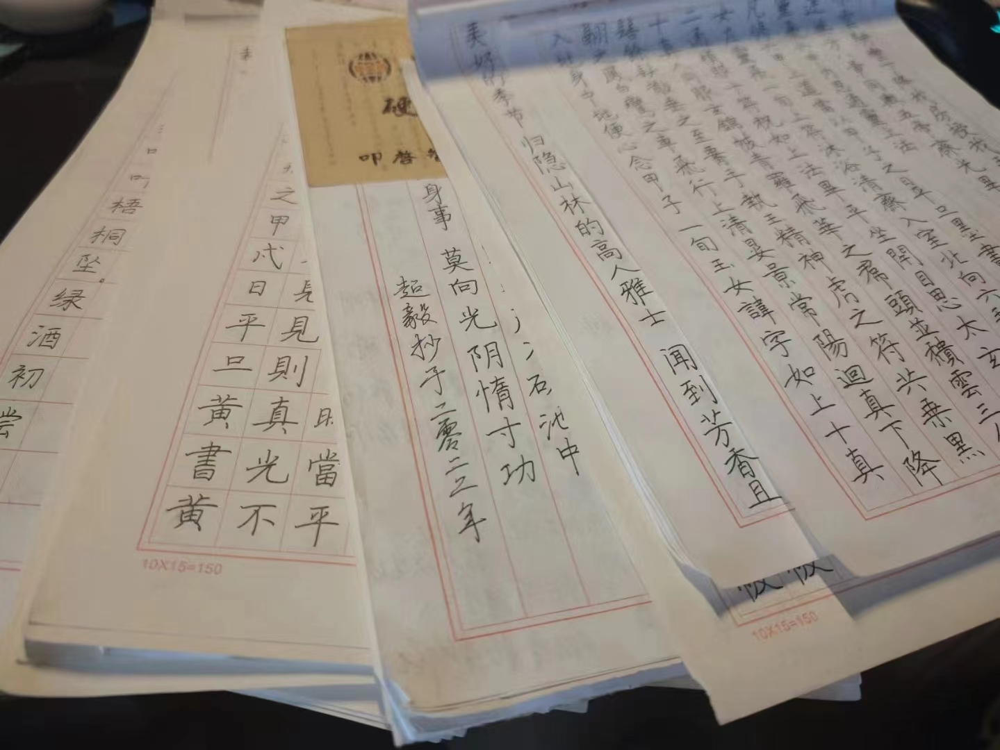

Chinese Calligraphy
My calligraphy practice focuses on the Ji Wang Shengjiao Xu and the Ling Fei Jing.
Calligraphy Journey
My journey with calligraphy began in junior high school, when I was compelled by my teacher to practice for half an hour each day, though I often found ways to procrastinate. However, upon entering high school, I realized the ugliness of my handwriting and spontaneously embarked on a journey of self-improvement. I made a commitment to practicing calligraphy daily, dedicating anywhere from half an hour to an hour to it. Inevitably, other matters would arise, causing me to put it aside for a while. Nonetheless, this practice significantly helped me cultivate perseverance and patience.
Until now, I have completed the study of Lingfei Jing and Shengjiao Xu, and I am currently focusing on the practice of Lanting Xu. My handwriting has indeed been gradually improving, becoming more pleasing to the eye.
Calligraphy has taught me that not everything can be accomplished solely through intelligence; rather, it requires daily dedication, consistent accumulation, and time to gradually change, progress, and achieve mastery.
Photos
 
